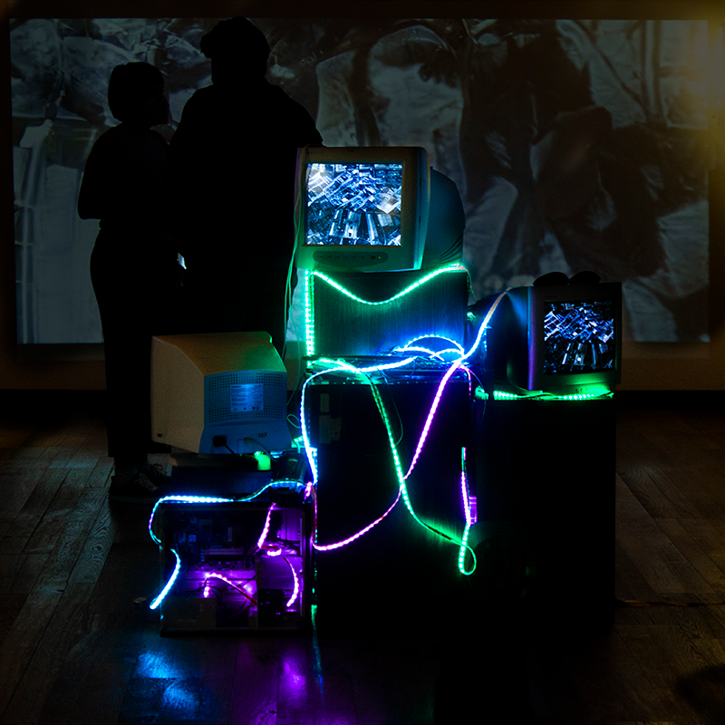
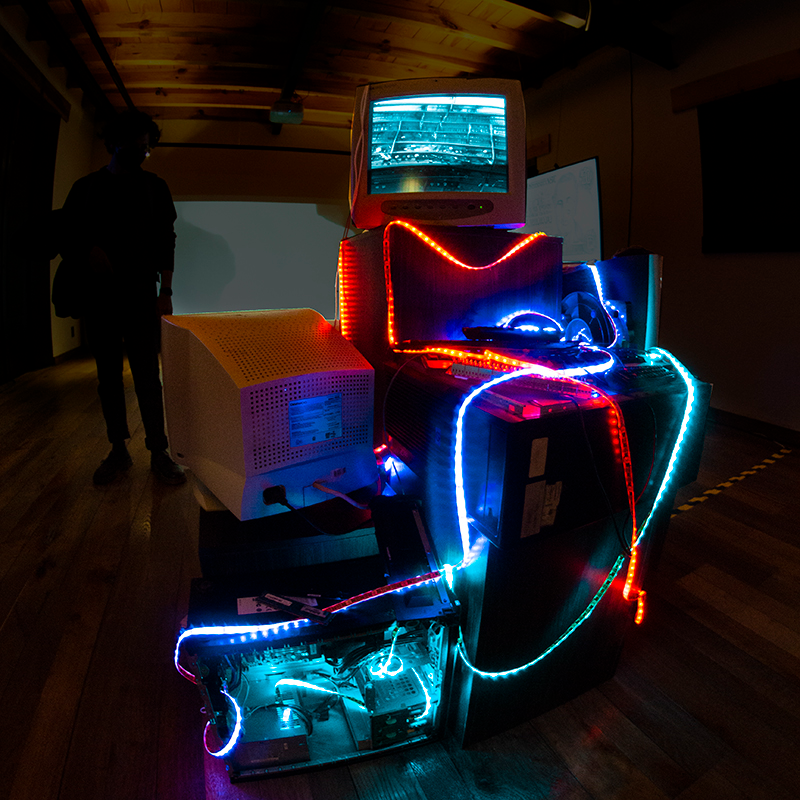

BILIA (Bienal Latinoamericana de Inteligencia Artificial)
Antiguo Molino de San Jeronimo
Installation old monitors, Machine Learning Generated video
Mexico City, Mexico, 2022
The piece consists of a screen with a video of an E-Waste interpolation. Around the screen there will be old music CDs and other iridescent effect elements will play an important role to visually create a luminous atmosphere; also, different E-Waste elements will be placed on and around the screen as if they were coming out of the screen.
This project seeks to generate a deep reflection on the immense amount of technological waste that is generated every day in the world and to raise awareness about the importance of recycling. The title of the piece comes from the coordinates of the Agbogbloshie Scrapyard, the largest technological garbage dump in the world, located in Ghana, an African country. Next to the title card will be placed a QR code that directs to those coordinates on Google Maps.
Every year millions of tons of televisions, computers, cell phones, batteries, wiring, chargers, appliances, etc. are discarded. The passage of time makes all technological devices obsolete, this is known as "programmed obsolescence." Unfortunately, it is not necessary for many years to pass, because companies program their products to become obsolete in a very short period of time in order to increase production and sales.